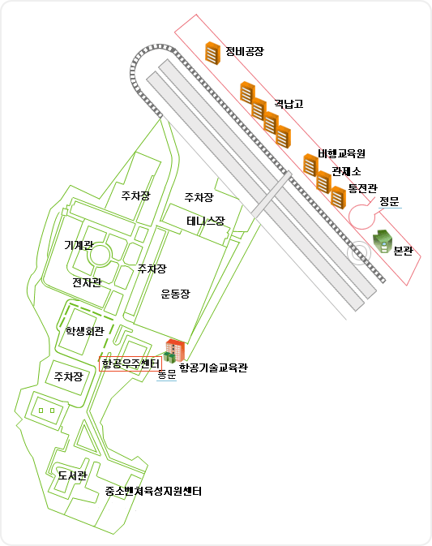
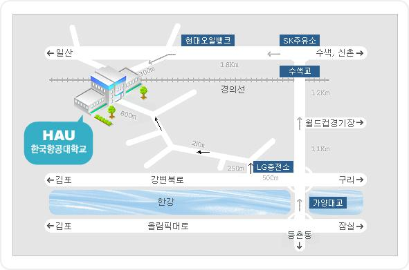

<table width=660 border=0>
<tr>
<td align=center>

<table width=620>
<tr><td>

 <p style="line-height:150%;">

<!-- 안내 -->
<center>

<table border="0" width="659">
    <tr>
        <td width="1">
            <p>&nbsp;</p>
        </td>
        <td width="647"><DIV><DIV>
<P 
style="font-family:굴림; font-size:12pt; color:darkblue; text-align:center; text-indent:0pt; line-height:130%; margin:0pt;"><FONT size=2 face="굴림"><SPAN 
style="FONT-WEIGHT: bold; FONT-SIZE: 12pt; COLOR: #00008b; LINE-HEIGHT: 14.4pt; FONT-FAMILY: '굴림'; LETTER-SPACING: 0pt; TEXT-ALIGN: center">정보과학회 프로그래밍언어연구회 </SPAN></FONT></P>
<P 
style="font-family:굴림; font-size:12pt; color:darkblue; text-align:center; text-indent:0pt; line-height:130%; margin:0pt;"><FONT size=2 face="굴림"><SPAN 
style="FONT-WEIGHT: bold; FONT-SIZE: 12pt; COLOR: #00008b; LINE-HEIGHT: 14.4pt; FONT-FAMILY: '굴림'; LETTER-SPACING: 0pt; TEXT-ALIGN: center">SIGPL 
2005 추계학술대회 및 정기총회</SPAN><SPAN 
style="FONT-WEIGHT: bold; FONT-SIZE: 10pt; COLOR: #00008b; LINE-HEIGHT: 12pt; FONT-FAMILY: '굴림'; LETTER-SPACING: 0pt; TEXT-ALIGN: center"> 
</SPAN></FONT></P>

<br>
<table border="0" width="630">
    <tr>
        <td width="190"><P 
style="font-family:굴림; font-size:10pt; color:black; text-align:center; text-indent:0pt; line-height:130%; margin:0pt;" align="left"><FONT size=2>&nbsp;</FONT></P>
        </td>
        <td width="470" align=left>
<font size=2><b>
<font color=green>일시 : 2005년 11월 19일(토) 오후 1시</font><br>
<font color=orange>장소 : 한국항공대학교 항공우주센타 206호</font><br>
주관 : 한국정보과학회 프로그래밍언어연구회 <br>
&nbsp; &nbsp; &nbsp; &nbsp;
한국항공대학교 인터넷정보검색연구센터  </b></font>
        </td>
    </tr>
</table>

                    <p style="line-height:150%;">
<P style="font-family:굴림; font-size:10pt; color:black; text-align:justify; text-indent:0pt; line-height:130%; margin:0pt;"><FONT size=2 face="굴림"><SPAN 
style="FONT-SIZE: 10pt; COLOR: #000000; LINE-HEIGHT: 15pt; FONT-FAMILY: '굴림'; LETTER-SPACING: 0pt; TEXT-ALIGN: justify">안녕하십니까? 
</SPAN></FONT></P>
<P 
style="font-family:굴림; font-size:10pt; color:black; text-align:justify; text-indent:0pt; line-height:130%; margin:0pt;"><FONT size=2 face="굴림"><SPAN 
style="FONT-SIZE: 10pt; COLOR: #000000; LINE-HEIGHT: 15pt; FONT-FAMILY: '굴림'; LETTER-SPACING: 0pt; TEXT-ALIGN: justify">프로그래밍언어연구회에서는 
2005년도 추계학술대회 및 정기 총회를 한국항공대학교에서 개최합니다. 초청강연과 7 편의 논문 발표가 마련되었습니다. 프로그래밍 언어 분야에서 활동하는 연구자와 학생들이 최근 동향과 결과를 토론하는 좋은 자리가 될 것입니다. 많은 참여 및 성원을 부탁드립니다.</SPAN> <br></font></P>
<br>
<P 
style="font-family:굴림; font-size:10pt; color:black; text-align:right; text-indent:0pt; line-height:130%; margin:0pt;"><FONT size=2 face="굴림"><SPAN 
style="FONT-WEIGHT: bold; FONT-SIZE: 10pt; COLOR: #000000; LINE-HEIGHT: 15pt; FONT-FAMILY: '굴림'; LETTER-SPACING: 0pt; TEXT-ALIGN: right">정보과학회 
프로그래밍언어연구회</SPAN> </font></P>
<P 
style="font-family:굴림; font-size:10pt; color:black; text-align:right; text-indent:0pt; line-height:130%; margin:0pt;"><FONT size=2 face="굴림"><SPAN 
style="FONT-WEIGHT: bold; FONT-SIZE: 10pt; COLOR: #000000; LINE-HEIGHT: 15pt; FONT-FAMILY: '굴림'; LETTER-SPACING: 0pt; TEXT-ALIGN: right">&nbsp;운영위원장 
도경구</SPAN> </font></P>
<br>

<P 
style="font-family:굴림; font-size:10pt; color:black; text-align:left; text-indent:0pt; line-height:130%; margin:0pt;"><font size="3" face="굴림" color="#FF3300"><b>&nbsp;* 
                    프로그램 * <br></b></font><FONT size=2 face="굴림"><SPAN 
style="FONT-SIZE: 10pt; COLOR: #000000; LINE-HEIGHT: 12pt; FONT-FAMILY: '굴림'; LETTER-SPACING: 0pt; TEXT-ALIGN: left"><BR></SPAN></font></P>
            <table style="font-family:굴림; font-size:10pt; color:black; text-align:left; text-indent:0pt; line-height:130%; margin:0pt;" border="1" cellspacing="0" bordercolordark="white" bordercolorlight="black">
                <tr>
                    <td width="631" height="27"><DIV><DIV>
<P 
style="font-family:굴림; font-size:10pt; color:black; text-align:left; text-indent:0pt; line-height:130%; margin:0pt;"><FONT size="2" face="굴림"><SPAN 
style="font-family:굴림; color:black; letter-spacing:0pt; text-align:left; line-height:12pt;">12:30 
- 13:00 &nbsp;등록</SPAN> </font></P>
</DIV>
</DIV></td>
                </tr>
                <tr>
                    <td width="631" height="32" bgcolor="#EDEDFA"><DIV><DIV>
<P 
style="font-family:굴림; font-size:10pt; color:black; text-align:left; text-indent:0pt; line-height:130%; margin:0pt;"><FONT size="2" face="굴림"><SPAN 
style="font-family:굴림; color:black; letter-spacing:0pt; text-align:left; line-height:12pt;">13:00 
                    - 14:20 &nbsp;<b> 세션 
1 : </b>좌장 한환수(KAIST)<b><br></b></SPAN></font></P>
</DIV>
</DIV></td>
                </tr>
                <tr>
                    <td width="631" height="107"><DIV><FONT size=2 face="굴림">&nbsp; SMT 멀티 프로세서 시스템을 위한 적응형 실행기법&nbsp;- 정창희(ETRI), 이재진(서울대) [<a href="1-1.pdf">발표자료</a>]<BR> 
                 
&nbsp;&nbsp;간단한 자바프로그램을 위한 CTL 모델 체킹 - 이정림, 이태훈, 권기현(경기대)<BR> 
                 &nbsp;&nbsp;시스템 종속 그래프를 기반한 프로그램 자르개의 
구현 -&nbsp; 노상훈, 신승철(동양대) [<a href="1-3.pdf">발표자료</a>]<BR> &nbsp; 자바프로그램의 보안 정보 흐름 분석 
                -  박숙영, 이상규(숙명여대)<br></font><font face="굴림" size="2">
               </font><FONT size="2" face="굴림"><SPAN 
style="font-family:굴림; color:black; letter-spacing:0pt; text-align:left; line-height:12pt;">14:20 - 14:30 &nbsp;휴식<br></SPAN></font></DIV></td>
                </tr>
                <tr>
                    <td width="631" height="32" bgcolor="#EDEDFA"><DIV><DIV>
<P 
style="font-family:굴림; font-size:10pt; color:black; text-align:left; text-indent:0pt; line-height:130%; margin:0pt;"><FONT size="2" face="굴림"><SPAN 
style="font-family:굴림; color:black; letter-spacing:0pt; text-align:left; line-height:12pt;">14:30 
                    - 15:20 &nbsp;<b>초청강연 
:</b> 좌장 신승철(동양대)</SPAN></font></P>
</DIV>
</DIV></td>
                </tr>
                <tr>
                    <td width="631" height="52"><DIV>  <FONT size="2" face="굴림"><SPAN 
style="font-family:굴림; color:black; letter-spacing:0pt; text-align:left; line-height:12pt;">&nbsp;다단계 
                    매크로 프로그래밍 해커를 위한 타입 시스템 - 이광근(서울대) 
                    <br></SPAN>15:20 - 15:30 휴식</font></DIV></td>
                </tr>
                <tr>
                    <td width="631" height="34" bgcolor="#EDEDFA"><DIV><DIV>
<P 
style="font-family:굴림; font-size:10pt; color:black; text-align:left; text-indent:0pt; line-height:130%; margin:0pt;"><FONT size="2" face="굴림"><SPAN 
style="font-family:굴림; color:black; letter-spacing:0pt; text-align:left; line-height:12pt;">15:30 
                    - 16:30 &nbsp;<b>세션 
2 : </b>좌장 이은영(동덕여대)</SPAN></font></P>
</DIV>
</DIV></td>
                </tr>
                <tr>
                    <td width="631" height="68"><DIV><DIV>
<P 
style="font-family:굴림; font-size:10pt; color:black; text-align:left; text-indent:0pt; line-height:130%; margin:0pt;"><FONT size="2" face="굴림"><SPAN 
style="font-family:굴림; color:black; letter-spacing:0pt; text-align:left; line-height:12pt;">&nbsp;&nbsp;</SPAN>fFSM 모델의 정형 분석 
                    - 박사천, 권기현(경기대) [<a href="3-1.pdf">발표자료</a>]<BR>  &nbsp;&nbsp;C프로그램을 위한 효율적인 버퍼 오버런 분석기의 개발 
                    - 
김유일,전진성,한환수(KAIST) [<a href="3-2.pdf">발표자료</a>]<BR>  &nbsp;&nbsp;요약해석기 AiracV -  신재호,김재황,오학주,정영범,이광근(서울대)<BR> </font></P>
</DIV>
</DIV></td>
                </tr>
                <tr>
                    <td width="631" height="34" bgcolor="#EDEDFA"><DIV><DIV>
<P 
style="font-family:굴림; font-size:10pt; color:black; text-align:left; text-indent:0pt; line-height:130%; margin:0pt;"><FONT size="2" face="굴림"><SPAN 
style="font-family:굴림; color:black; letter-spacing:0pt; text-align:left; line-height:12pt;"><b>정기총회 
                                </b>16:30 - 17:20&nbsp;</SPAN> 정기총회 - 사회:총무 
                    신승철(동양대)</font></P>
</DIV>
</DIV></td>
                </tr>
            </table>


<DIV><DIV>
<P 
style="font-family:굴림; font-size:10pt; color:black; text-align:left; text-indent:0pt; line-height:130%; margin:0pt;">&nbsp;</P>
</DIV>


                </div>
            </div>

<P 
style="font-family:굴림; font-size:10pt; color:black; text-align:left; text-indent:0pt; line-height:150%; margin:0pt;"><font size="3" face="굴림" color="#FF3300"><b>&nbsp;*등록안내 
                    </b></font></P>
<P 
style="font-family:굴림; font-size:10pt; color:black; text-align:left; text-indent:0pt; line-height:150%; margin:0pt;"><FONT size=2 face="굴림"><SPAN 
style="FONT-SIZE: 10pt; COLOR: #000000; LINE-HEIGHT: 15pt; FONT-FAMILY: '굴림'; LETTER-SPACING: 0pt; TEXT-ALIGN: left">&nbsp;(1) 
등록비 : 1만원(KISS 및 SIGPL 일반회원), 1만5천원(KISS와 SIGPL 중 하나만 일반회원), 2만원(비회원) -- 학생은 5000원 할인</SPAN> 
</font></P>
<P 
style="font-family:굴림; font-size:10pt; color:black; text-align:left; text-indent:0pt; line-height:150%; margin:0pt;"><FONT size=2 face="굴림"><SPAN 
style="FONT-SIZE: 10pt; COLOR: #000000; LINE-HEIGHT: 15pt; FONT-FAMILY: '굴림'; LETTER-SPACING: 0pt; TEXT-ALIGN: left">&nbsp;(2) 
등록비에는 간식 및 음료,&nbsp;논문집 포함</SPAN> 
</font></P>
<P 
style="font-family:굴림; font-size:10pt; color:black; text-align:left; text-indent:0pt; line-height:150%; margin:0pt;"><FONT size=2 face="굴림"><SPAN 
style="FONT-SIZE: 10pt; COLOR: #000000; LINE-HEIGHT: 15pt; FONT-FAMILY: '굴림'; LETTER-SPACING: 0pt; TEXT-ALIGN: left">&nbsp;(3) 
영수증은 당일 등록과 동시에 등록 데스크에서 발급</SPAN></font></P>
<P 
style="font-family:굴림; font-size:10pt; color:black; text-align:left; text-indent:0pt; line-height:150%; margin:0pt;"><FONT size=2 face="굴림"><SPAN 
style="FONT-SIZE: 10pt; COLOR: #000000; LINE-HEIGHT: 15pt; FONT-FAMILY: '굴림'; LETTER-SPACING: 0pt; TEXT-ALIGN: left">&nbsp;(4) 
현장에서 회원 가입 가능</SPAN>&nbsp;<br>&nbsp;</font></P>
<P 
style="font-family:굴림; font-size:10pt; color:black; text-align:left; text-indent:0pt; line-height:150%; margin:0pt;"><font size="3" face="굴림" color="#FF3300"><b>&nbsp;*준비위원회<br> 
                    </b></font><FONT size=2 face="굴림"><SPAN 
style="FONT-SIZE: 10pt; COLOR: #000000; LINE-HEIGHT: 15pt; FONT-FAMILY: '굴림'; LETTER-SPACING: 0pt; TEXT-ALIGN: left"><STRONG>&nbsp;</STRONG>조직위원장 
한국항공대학교 이긍해 교수<br> &nbsp;학술위원장 
서울대 이광근 교수<br>&nbsp;</SPAN></font></P>
<P 
style="font-family:굴림; font-size:10pt; color:black; text-align:left; text-indent:0pt; line-height:150%; margin:0pt;"><font size="3" face="굴림" color="#FF3300"><b>&nbsp;* 
                    문 &nbsp;의</b></font><FONT size=2 face="굴림"><SPAN 
style="FONT-SIZE: 10pt; COLOR: #000000; LINE-HEIGHT: 15pt; FONT-FAMILY: '굴림'; LETTER-SPACING: 0pt; TEXT-ALIGN: left"><STRONG>&nbsp;</STRONG></SPAN></FONT></P>
<P 
style="font-family:굴림; font-size:10pt; color:black; text-align:left; text-indent:0pt; line-height:150%; margin:0pt;"><FONT size=2 face="굴림"><SPAN 
style="FONT-SIZE: 10pt; COLOR: #000000; LINE-HEIGHT: 15pt; FONT-FAMILY: '굴림'; LETTER-SPACING: 0pt; TEXT-ALIGN: left">&nbsp;총무 동양대 
신승철 교수(shin at dyu.ac.kr, 016-820-4447)</SPAN> </font></P>

<a name="place">

            <p style="line-height:150%;"><font face="굴림" size="3" color="#FF3300"><b>* 
            장소안내</b></font><font face="굴림" size="2">&nbsp;</font></p>
<DIV><DIV>
                    <p style="line-height:150%;"><font face="굴림" size="2"></font>
                </div>
            </div>

            <p style="line-height:150%;"><br><font face="굴림" size="3" color="#FF3300"><b>* 
            교통편 안내</b></font><font face="굴림" size="2">&nbsp;<br><b>ㆍ광역버스 
            (정문 하차)<br> &nbsp;&nbsp;&nbsp;</b></font><font face="굴림" size="2" color="#FF3300">광역버스 
            (RED) 9708</font><font face="굴림" size="2"> - 신촌, 수색전철역, 
            능곡역, 일산구청 경유<br> &nbsp;&nbsp;&nbsp;&nbsp;</font><font face="굴림" size="2" color="#FF3300">9706</font><font face="굴림" size="2"> 
            - 서울역, 광화문, 연대앞, 수색전철역, 백석역, 이마트 경유<br> &nbsp;&nbsp;&nbsp;&nbsp;</font><font face="굴림" size="2" color="#FF3300">9713</font><font face="굴림" size="2"> 
            - 광화문, 서울역, 수색전철역, 능곡역, 화정전철역 경유<br><b>ㆍ지하철<br> 
            &nbsp;&nbsp;&nbsp;</b></font><font face="굴림" size="2" color="#006666">2호선 
            신촌전철역 1번 출구 현대백화점</font><font face="굴림" size="2">→ 
            중소기업은행 앞에서 </font><font face="굴림" size="2" color="#FF0033">광역버스(RED) 
            9706번,9708번</font><font face="굴림" size="2"><br> &nbsp;&nbsp;&nbsp;&nbsp;&nbsp;&nbsp;&nbsp;&nbsp;&nbsp;&nbsp;&nbsp;&nbsp;&nbsp;&nbsp;&nbsp;&nbsp;&nbsp;&nbsp;&nbsp;&nbsp;&nbsp;&nbsp;&nbsp;&nbsp;&nbsp;&nbsp;&nbsp;&nbsp;&nbsp;&nbsp;&nbsp;&nbsp;&nbsp;&nbsp;&nbsp;&nbsp;&nbsp;&nbsp;&nbsp;&nbsp;&nbsp;&nbsp;&nbsp;&nbsp;&nbsp;&nbsp;&nbsp;&nbsp;&nbsp;&nbsp;&nbsp;&nbsp;&nbsp;&nbsp;&nbsp;&nbsp;&nbsp;&nbsp;&nbsp;&nbsp;&nbsp;&nbsp;&nbsp;&nbsp;</font><font face="굴림" size="2" color="#009933">지선버스(GREEN) 
            7726번,7727번,7728번</font><font face="굴림" size="2"> &nbsp;(30분 
            소요)<br> &nbsp;&nbsp;&nbsp;&nbsp;</font><font face="굴림" size="2" color="#996600">6호선 
            수색전철역 5번 출구</font><font face="굴림" size="2">→ </font><font face="굴림" size="2" color="#FF0033">광역버스(RED) 
            9706번,9708번,9713번</font><font face="굴림" size="2"><br> &nbsp;&nbsp;&nbsp;&nbsp;&nbsp;&nbsp;&nbsp;&nbsp;&nbsp;&nbsp;&nbsp;&nbsp;&nbsp;&nbsp;&nbsp;&nbsp;&nbsp;&nbsp;&nbsp;&nbsp;&nbsp;&nbsp;&nbsp;&nbsp;&nbsp;&nbsp;&nbsp;&nbsp;&nbsp;&nbsp;&nbsp;&nbsp;&nbsp;&nbsp;&nbsp;&nbsp;&nbsp;&nbsp;&nbsp;&nbsp;&nbsp;&nbsp;&nbsp;&nbsp;&nbsp;&nbsp;&nbsp;</font><font face="굴림" size="2" color="#009933">지선버스(GREEN) 
            7726번,7727번,7728번,7730번</font><font face="굴림" size="2"> (15분 
            소요)<br> &nbsp;&nbsp;&nbsp;&nbsp;</font><font face="굴림" size="2" color="#FF6600">3호선 
            화정전철역 1번 출구</font><font face="굴림" size="2">→ 롯데마트 
            맞은편에서 </font><font face="굴림" size="2" color="#FF0033">광역버스(RED) 
            9713번</font><font face="굴림" size="2"><br> &nbsp;&nbsp;&nbsp;&nbsp;&nbsp;&nbsp;&nbsp;&nbsp;&nbsp;&nbsp;&nbsp;&nbsp;&nbsp;&nbsp;&nbsp;&nbsp;&nbsp;&nbsp;&nbsp;&nbsp;&nbsp;&nbsp;&nbsp;&nbsp;&nbsp;&nbsp;&nbsp;&nbsp;&nbsp;&nbsp;&nbsp;&nbsp;&nbsp;&nbsp;&nbsp;&nbsp;&nbsp;&nbsp;&nbsp;&nbsp;&nbsp;&nbsp;&nbsp;&nbsp;&nbsp;&nbsp;</font><font face="굴림" size="2" color="#009933">지선버스(GREEN) 
            7728번<br></font><font face="굴림" size="2">&nbsp;&nbsp;&nbsp;&nbsp;&nbsp;: 
            항공대 동문으로 운행하는 순환형 지선버스(녹색) 7726번(15분 간격)이 
            항공우주센터에서 가깝습니다. <br> &nbsp;&nbsp;&nbsp;&nbsp;&nbsp;&nbsp;&nbsp;(다른 
            버스는 정문으로 운행. 정문에서 도보 10분)<br><br><b>ㆍ승용차<br> 
            &nbsp;&nbsp;</b></font><font face="굴림" size="2" color="#0033FF">- 
            강북강변로 이용<br> &nbsp;&nbsp;</font><font face="굴림" size="2">&nbsp;&nbsp;가양대교를 
            밑을 지나자 마자 LG주유소(충전소)를 끼고 우회전 → 250m직진후 삼거리에서 
            좌회전 → <br> &nbsp;&nbsp;&nbsp;&nbsp;큰 길따라 2km 직진후 3거리에서 
            좌회전(항공대 이정표 참조) → 한국항공대학교(동문)<br> &nbsp;&nbsp;</font><font face="굴림" size="2" color="#0033FF">- 
            올림픽 대로 이용</font><font face="굴림" size="2"> <br> &nbsp;&nbsp;&nbsp;&nbsp;가양대교 
            건너서 다리 끝까지 거의 온 후(우측 차선 이용) 일산방향 자유로 들어선 
            직후 LG 주유소 끼고 <br> &nbsp;&nbsp;&nbsp;&nbsp;&nbsp;우회전 후 
            위와 같이 진행<br><br><br><b>ㆍ기차<br></b>- 
            서울역에서 경의선 탑승하여 화전역에서 하차(1200원, 20분소요), 하차 후 도보로 10분.<br>&nbsp;&nbsp;(서울역 출발시간 : 매시 50분에 출발)<br></font></p>


</td>
    </tr>
</table>


</center>


 
   </td></tr></table>

</td></tr></table>
